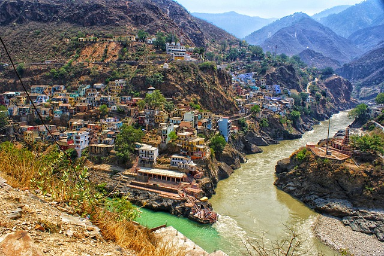
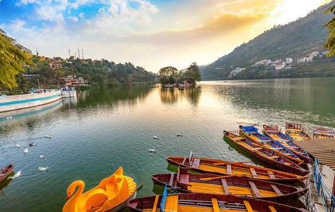
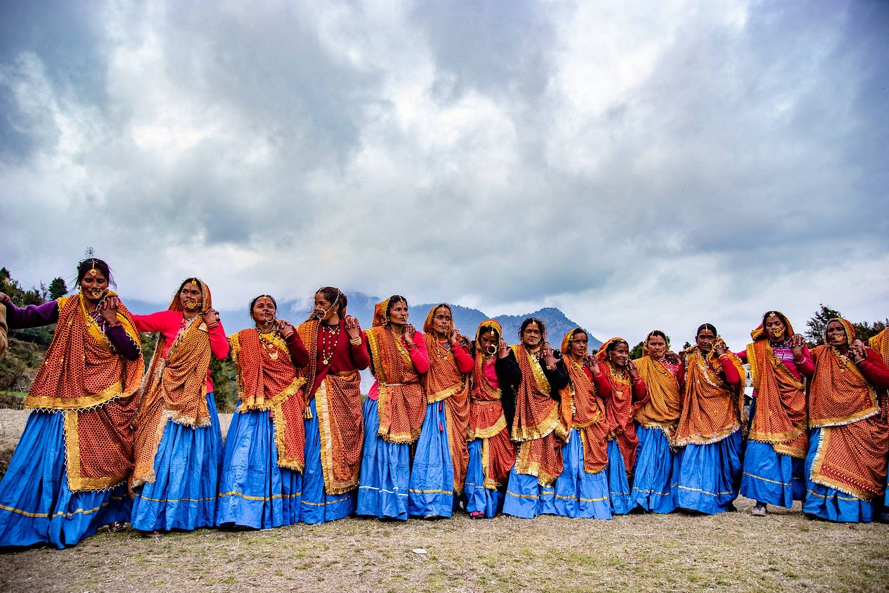
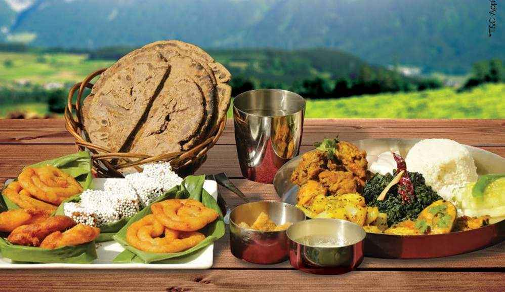
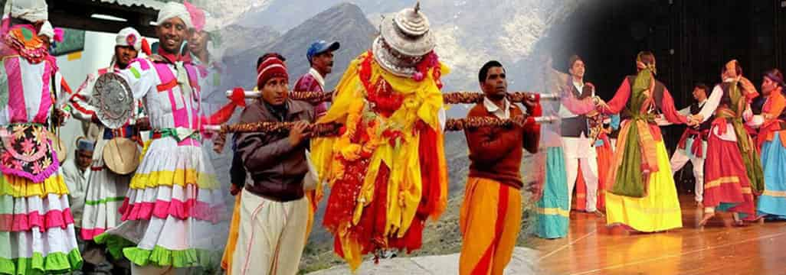

| ✧ Aspect | Information |
|---|---|
| ✧ Capital | Dehradun |
| ✧ Chief minister | Pushkar Singh Dhami |
| ✧ Largest City | Dehradun |
| ✧ Districts | 13 |
| ✧ Official Language | Hindi |
| ✧ Other Language | English, Hindi |
| ✧ Population | Approximately 11 million |
| ✧ Area | 53,483 square kilometers |
| ✧ Major Rivers | Ganga, Yamuna |
| ✧ Major Industries | Tourism, Agriculture, Hydro Power |
| ✧ Popular Place | Jim Corbett National Park, Rishikesh, Haridwar |
The traditional dress for men in Uttarakhand is kurta-pajama or dhoti, and for women, it's saree or lehenga-choli.
Uttarakhand, formerly known as Uttaranchal, is a state in the northern part of India. It is often referred to as the "Devabhumi" (literally "Land of the Gods") due to numerous Hindu temples and pilgrimage centers found throughout the state. Uttarakhand was carved out of the state of Uttar Pradesh in 2000 and has since emerged as a popular tourist destination known for its scenic beauty and spiritual significance.
The history of Uttarakhand is intertwined with mythology, with several ancient texts and epics like the Ramayana and Mahabharata mentioning the region. It is believed to be the land where Lord Rama meditated and where the Pandavas embarked on their final journey to the Himalayas.
Throughout its history, Uttarakhand has been home to various indigenous tribes and ethnic groups, each with its own distinct culture and traditions. The region has also witnessed the rise and fall of several kingdoms and dynasties, including the Katyuri, Chand, and Garhwal kingdoms.
In the medieval period, Uttarakhand came under the influence of various external powers, including the Delhi Sultanate and the Mughal Empire. However, the rugged terrain and remote location of the region made it difficult to control, allowing local chieftains and rulers to maintain a degree of autonomy.
During the British colonial era, Uttarakhand was part of the larger province of United Provinces of Agra and Oudh. The British administration brought significant changes to the region, including the establishment of hill stations like Nainital and Mussoorie.
After India gained independence in 1947, Uttarakhand remained a part of Uttar Pradesh until it was granted statehood in 2000. Since then, the state has focused on promoting tourism and preserving its natural heritage while also addressing challenges related to infrastructure development and environmental conservation.
Today, Uttarakhand continues to attract millions of visitors each year, drawn by its picturesque landscapes, spiritual sites, and opportunities for adventure and trekking in the Himalayas.




